Bruno Aguzzi, 20 anni, designer della comunicazione visiva.
Cresciuto a Fossombrone, nelle Marche, studio Design presso l'Università di San Marino. Mi occupo di progettazione grafica, branding e comunicazione digitale, con particolare attenzione alla tipografia e al design editoriale.
La fotografia è parte del mio processo creativo: osservo paesaggi, situazioni, dettagli. Sport come il calcio e lo skateboard mi insegnano disciplina e sperimentazione, valori che porto nel design.
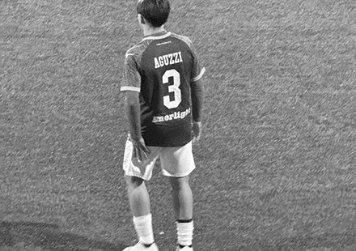
Calcio
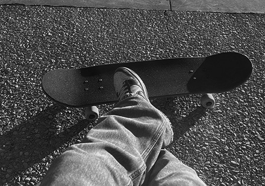
Skateboard
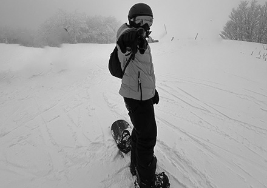
Snowboard
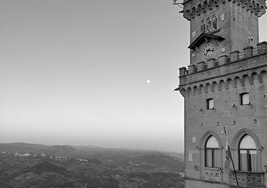
Foto
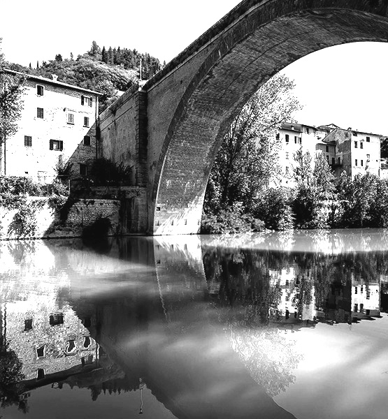
Fossombrone
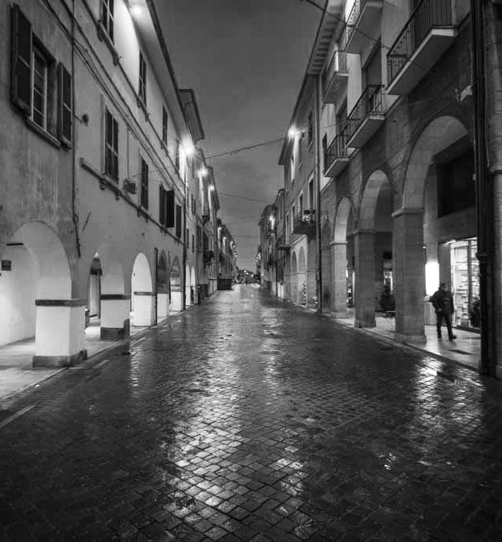
Marche
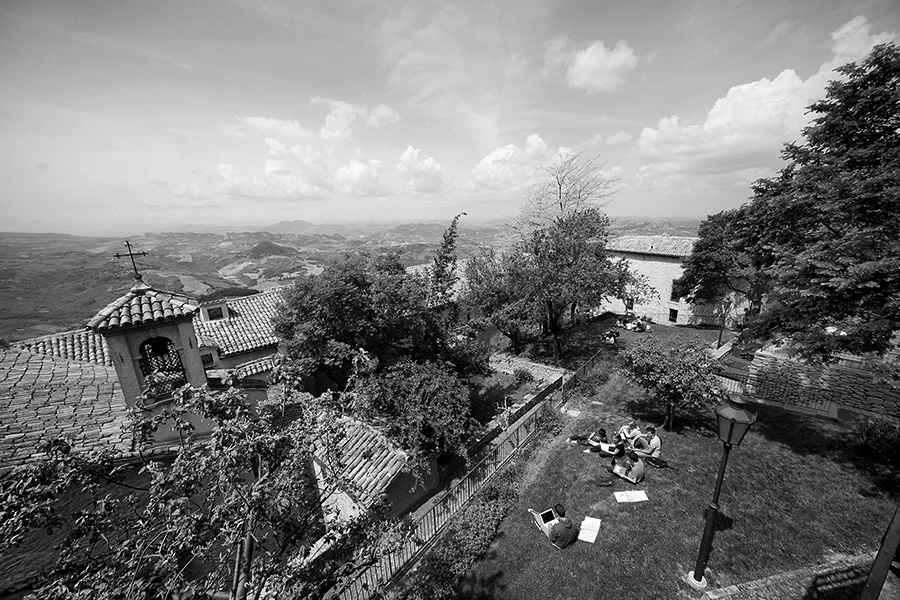
Laboratorio di design della comunicazione presso l'Università degli Studi della Repubblica di San Marino. Un percorso formativo dedicato alla progettazione visiva, alla tipografia e alla comunicazione digitale. Attraverso progetti concreti e collaborazioni con realtà del territorio, ho sviluppato competenze nella progettazione grafica, nel branding e nel design editoriale.
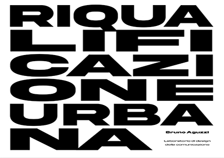
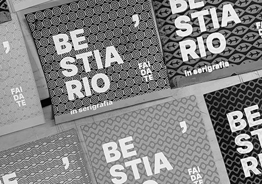
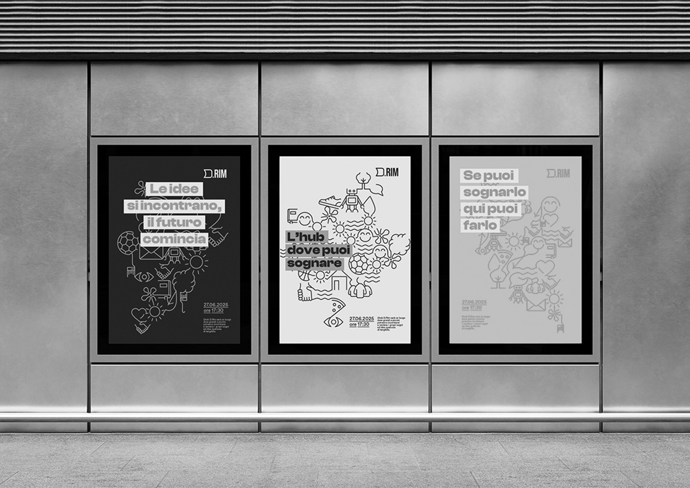
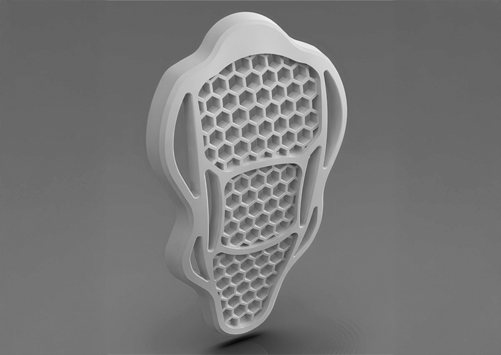
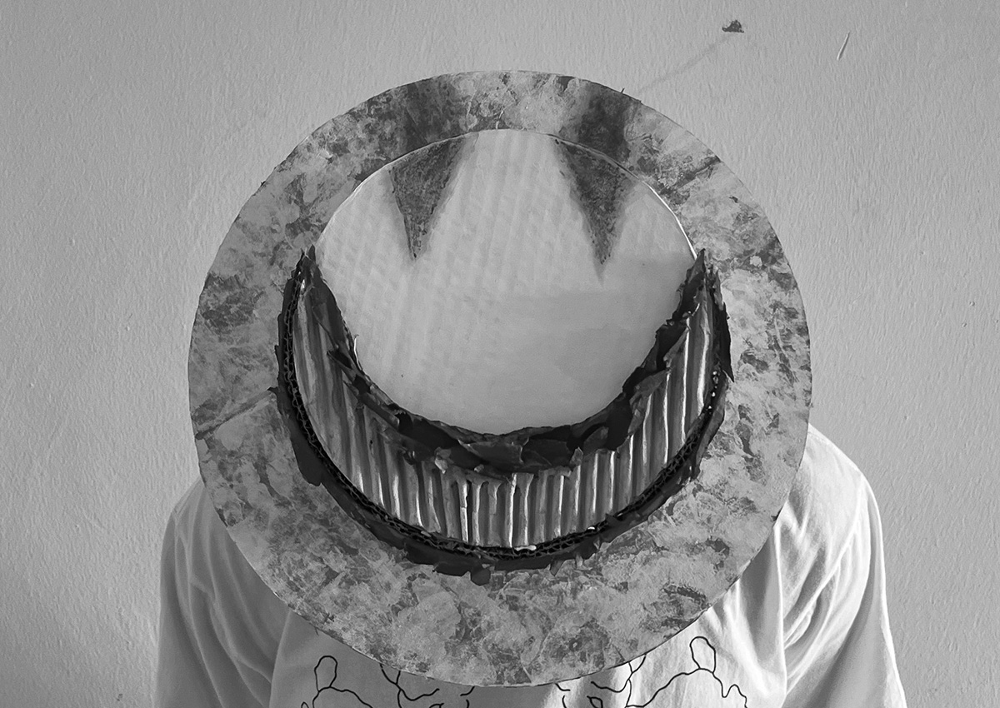